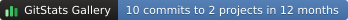

GitStats Gallery, 107 repositories · generated by gitstats 2.11.0.post1.dev10 on 2026-10-23 11:33:22
How it is counted: a commit counts here when the author’s email address is at fujitsu.com or under it, and at least two people commit from the domain. A domain says where an address is, not who paid for the work, so these are lower bounds.
| Repository | Commits (12 mo) | Commits | Addresses | First commit | Last commit |
|---|---|---|---|---|---|
| Kubernetes | 6 | 539 | 33 | 2015-10-16 | 2026-03-17 |
| PyTorch | 4 | 82 | 15 | 2019-04-11 | 2026-10-13 |
| Helm | 0 | 55 | 11 | 2019-12-23 | 2021-11-01 |
| Prometheus | 0 | 53 | 10 | 2019-02-21 | 2022-06-01 |
| Jaeger | 0 | 14 | 7 | 2020-01-02 | 2021-11-19 |
| NumPy | 0 | 12 | 2 | 2023-03-08 | 2025-05-14 |
| CoreDNS | 0 | 11 | 8 | 2019-02-27 | 2021-11-18 |
| containerd | 0 | 10 | 4 | 2017-01-20 | 2021-05-24 |
| Linkerd | 0 | 9 | 3 | 2020-07-07 | 2021-01-27 |
| Envoy | 0 | 6 | 3 | 2019-02-25 | 2022-05-30 |
| etcd | 0 | 3 | 2 | 2019-02-26 | 2020-11-25 |
For a README or an open source program’s page. It is made again with the portfolio, so it stays current. A shields.io endpoint is next to it, for badges in other styles.

[](https://shenxianpeng.dev/gitstats/gallery/orgs/fujitsu.com.html)